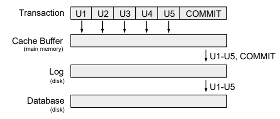
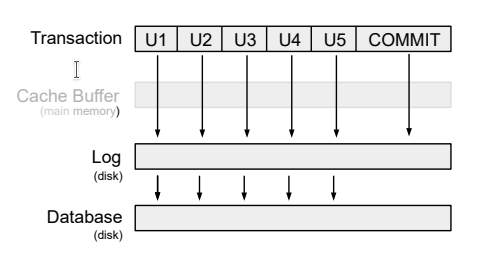
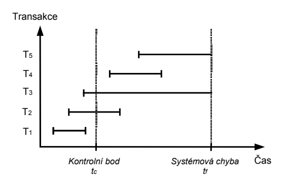

sdílení kódu mezi aplikacemi, nezávislost na platformě
Nevýhody
horší přenositelnost mezi jinými DBS (ale jak často to potřebujeme?)
PL/SQL blok
declare-- nepovinná deklarace lokálncích proměnnýchbegin-- povinné otevření bloku příkazůexception-- nepovinné zachytávání výjímekend-- povinné ukončení bloku||-- operátor konkatenace (sjednocení řetězců)v_lg Student.login%TYPE-- proměnná v_lg bude stejného typu co Student login %ROWTYPE-- strukturovaný datový typ
Výjimky
s set autocommit on bude každý příkaz jedna transakce, takže operace commit a rollback nemají smysl
s set autocommit off začíná transakce koncem té předchozí a je ukončena commit nebo rollback
Příklady výjimek
NO_DATA_FOUND - select nevrátil žádný řádek
TOO_MANY_ROWS - select into vrátilo více než jeden řádek
VALUE_ERROR - chybná manipulace s hodnotou
Procedury (3)
Několik typů procedur: - Anonymní procedury - víceméně begin ... end; blok - Pojmenované procedury - Pojmenované funkce - vrací hodnotu, narozdíl od procedur
Trigger
spouští se v závislosti na nějakém příkazu (např. insert, update, delete)
before - před provedením příkazu
after - po provedení příkazu
instead of - místo provedení příkazu
Cykly (4)
loop - nekonečný cyklus
while - cyklus s podmínkou na začátku
for - cyklus s podmínkou na začátku a s inkrementací na konci
Kurzory
Implicitní kurzor
vytváří se automaticky po provedení příkazů jako insert, update, delete
Explicitní kurzor
open jmeno_kurzoru - otevření kurzoru
fetch jmeno_kurzoru - načítá aktuální záznam kurzoru do proměnné a posune se na další záznam
close jmeno_kurzoru - uzavření kurzoru
Balíky
Něco jako knihovny v jiných jazycích
Seskupují procedury, funkce, proměnné, výjimky do jednoho jmenného prostoru
Specifikace a tělo
Bulk operace
bulk collect - načtení více záznamů do kolekce
forall - provedení operace nad všemi záznamy v kolekci
Statické a dynamické SQL (5)
V PL/SQL bloku můžeme přímo volat pouze statické příkazy
select, insert, update, delete, merge
lock table, commit, rollback, savepoint, set transaction
Dynamické SQL
umožňuje sestavit a volat jakékoliv SQL příkazy (na které má uživatel právo) za běhu aplikace
Nevýhoda je, že nelze ověřit syntaktickou správnost
Nebezpečí sql injection
Používame jen tehdy, když není možno použít statické PL/SQL
Zpracovaní dotazu
DBS kontroluje, zda už nebyl příkaz dříve zaslán
Pokud byl zaslán poprvé:
Je naparsován a vytvoří se plán vykonávání dotazu
Dotaz může být vykonán mnoha způsoby, DBS hledá ten nejlepší
Tento proces může trvat déle, než samotné vykonání dotazu
Pokud by již dříve zaslán, použije se dříve vytvořený plán vykonávání
Při kontrole zda už nebyl vykonán se kontroluje cel řetězec
select * from student where login = 'x' a select * from student where login = 'y' se budou lišit
Používání vázaných proměnných (bind variables) umožňuje využít již vytvořený plán vykonávání
select * from student where login = :lg a select * from student where login = :lg se budou shodovat
Snižuje se tím zátěž na DBS a čas vykonávní
PL/SQL používá vázané proměnné automaticky
Vázané proměnné můžeme použít pouze u literálů (např. hodnoty atributu.. né jména tabulky)
Porovnání výkonu
bez vázaných proměnných: 65.48s
s vázanými proměnnými: 0.25s
SQL injection
Ochrana
Používaní statických dotazů
V dynamických dotazech používat vázané proměnné
Správné řízení přístupu (přístupová práva)
Nepoužívat hodnotu přímo (třeba prvně převést na číslo)
Má smysl psát logiku aplikace v PL/SQL?
rozhodně ANO
Transakce (6)
Zotavení databáze
Zotavení (recovery) => zotavení databáze z nějaké chyby (přetečení hodnoty atributu, pád systému)
Základní jednotkou zotavení je transakce
Né všechny DBS zotavení podporují
Výsledkem zotavení musí být korektní stav
Pro zotavení se používá redundatní informace
Komponenta SŘBD, která se stará o řízení transakcí je manager transakcí
Korektní vs Konzistentní stav?
Korektní stav - stav, který odpovídá omezením (např. hodnota atributu musí být v intervalu) ????
TBD.. pm me
Transakce
Logická jednotka práce s db (taky jednotkou zotavení)
Transakce nemůže být uvnitř jiné transakce => Atomická, nědělitelná
Začíná operací begin transaction a končí commit nebo rollback
Programátor je řídí pomocí příkazů commit(potvrzení) a rollback(vrácení)
Klasifikace chyb
Lokální chyby
Chyba v dotazu, přetečení dotazu
Globální chyby
Systémové (soft crash) - Vpadek proudu, nebo pád systému
Chyba HW (hard crash) - Poškození disku, nebo ztráta dat
Potvrzovací bod
Operace commit zavádí potvrzovací bod
Operace rollback vrací databázi do stavu posledního potvrzovacího bodu
V okamžiku potvrzení:
Všechny změny jsou trvale uloženy v databázi
Všechny adresace a zámky entic uvolněny
Vlastnost ACID
A => Atomičnost - transakce je nedělitelná => musí být provedeny všechny operace, nebo žádná
C => Korektnost- transakce převádí korektní stav db do jiného korektního stavu (mezi začátkem a koncem nemusí být db v korektním stavu)
I => Izolovanost - transakce jsou navzájem izolovány => změny provedené jednou transakcí jsou pro ostatní viditelné až po COMMIT
D => Trvalost - změny provedené transakcí jsou trvale uloženy v db
(atomicity, consistency, isolation, durability)
Implementační detaily
Všechny změny musí být zapsány do logu před samotným zápisem změn do db
Po commit je zapsán do logu commit záznam
Říká se tomu pravidlo dopředného zápisu (write-ahead log rule)
Zotavení systému
Zotavení není vázáno pouze na jednu transakci, ale na celou databázi
Hlavní problémem při systémové chybě, je ztráta obsahu vlastní paměti
Během zotavení se po restartu provádí:
Přesný stav transakce přerušné chybou není znám
Musí být zrušena (UNDO)
Transakce byla úspěšně ukončena, ale změny nebyly přeneseny z logu do db
Musí být přepracována (REDO)
Základní techniky zotavení
Odložená (NO-UNDO/REDO) deferred update
Neprovádí aktualizaci logu a db až do potvrzení transakce
Všechny aktualizace jsou zapsány do paměti
Po commitu jsou aktualizace nejprve zaznamenány do logu a pak do db
Pokud transakce selže, není nutné provést UNDO (protože db nebyla aktualizována)
REDO bude provedeno, jestli DBS zapsal aktualizace do logu, ale né do db
Používa se pouze u krátkých transakcí, jinak hrozí přetečení(používá se In-Memory DBS)
deferred_update
Okamžitá (UNDO/NO-REDO) immediate update
Provádí aktualizaci logu po každé aktualizaci transakce
Aktualizace jsou zapsány do logu, poté do db
Pokud transakce selže, je nutné provést UNDO (na disk byly zapsány aktualizace, které musí být zrušeny)
Do logu se ukládají původní hodnoty, což umožňuje UNDO
REDO není nutné, protože aktualizace byly zapsány do db
(UNDO/NO-REDO), protože aktualizace bbyly zapsány do db před potvrzením transakce
Nízký výkon
immediate_update
Kombinovaná (UNDO/REDO)
Aktualizace jsou zapisovány do logu po commitu
K aktualizaci dochází v určitých časových intervalech - Kontrolní body (checkpoint)
Kontrolní body jsou vytvářeny třeba po určitém počtu záznamů
Zápis dosud provedených aktualizací do db
Zápis záznamu o kontrolním bodu do logu
Aktualizace db se týká všech transakcí vykonávaných v době kontrolního bodu, a transakcích před
combined_update
T1 => úspěšně dokončena před Tc, aktualizace byly do logu zapsány při COMMITu => zapsána do db
T2 => DBMS provede redo pro aktualizace provedené po Tc
T3 => DBMS provede undo pro aktualizace provedené před Tc
T4 => DBMS provede redo pro všechny aktualizace (ty byly při COMMITu zapsány do logu)
T5 => Neřešímě.. COMMIT nebyl proveden a žádné aktualizace nebyly zapsány do db v čase Tc
Po restartu DBS spustí tento algoritmus:
Vytvoř 2 seznamy transakcí: UNDO a REDO
Do UNDO vlož všechny transakce, které nebyly potvrzeny před posledním kontrolním bodem (REDO je prázdné)
Začni procházet záznamy v logu od posledního kontrolního bodu
Pokud je pro transakci T nalezen v logu záznam COMMIT, přesuň T z UNDO do REDO
DBS prochází log zpětně a ruší aktualizace transakcí ze seznamu UNDO
DBS prochází log dopředu a přepracovává aktualizace transakcí ze seznamu REDO
Databáze je v korektním stavu eyyy /
Záchrané body (savepoints)
Koncept záchraných bodů byl zaveden v SQL99, ale transakci rozděluje na menší části
Při ROLLBACK dochází k návratu na záchraný bod
Záchraný bod není ekvivalentní s potvrzením změn pomocí COMMIT
Transakce (idk)
Všechny SQL příkazy jsou atomické, až na (CALL a RETURN)
S AUTOCOMMIT ON rollback nedává smysl
Zotavení vs. Souběh
V NO-SQL DBMS nejsou podporovány transakce pro řešení paralelního přístupu
Programátor má zaručeno, že potvrzené aktualizace se z db neztratí
V DBS většinou nejde izolovanost transakcí vypnout
7 skipped
Řízení souběhu (8)
Možná klasifikace DBS:
Jednouživatelská - může jí používat jenom jeden uživatel v daném čase
Víceuživatelská - může jí používat více uživatelů současně
Problémy souběhu
Ztráta aktualizace (lost update)
Čas
Transakce A
Transakce B
t1
READ t
t2
READ t
t3
WRITE t
t4
WRITE t
Dojde ke ztrátě aktualizace provedené transakcí A, v čase t3
Nepotvrzená závislost (uncommitted dependency)
Problém nastává, když transakce A načte nebo aktualizuje záznam, který byl aktualizován doposud nepotvrzenou transakcí B
Jelikož transakce nebyla potvrzená, může se stát, že se stane ROLLBACK
V tomto případě transakce A pracuje s hodnotami, které nejsou platné
Čas
Transakce A
Transakce B
t1
WRITE t
t2
READ t
t3
ROLLBACK
Transakce A pracuje s daty z t2, ačkoli platné hodnoty jsou hodnoty z t1
Nekonzistentní analýza (inconsistent analysis)
Čas
Data
Transakce A
Transakce B
t1
acc1=30 acc2=20 acc3=50
READ acc1 suma=30
t2
acc1=30 acc2=20 acc3=50
READ acc2 suma=50
t3
acc1=30 acc2=20 acc3=60
WRITE acc3=60
t4
acc1=20 acc2=20 acc3=60
WRITE acc1=20
t5
acc1=20 acc2=20 acc3=60
COMMIT
t6
acc1=20 acc2=20 acc3=60
READ acc3 suma=110 ne 100
Transakce A počítá součet zůstatků na účtech, Transakce B převádí částku 10 z účtu acc1 na acc3
Transakce A má k dispozici nekonzistentní db,, proto vykoná nekonzistentní analýzu (místo součtu 100 dostane 110)
Není to problém nepotvrzené závislosti, protože transakce B potvrdí všechny aktualizace předtím, než si A vyžádá acc3
Konflikty čtení a zápisu
(R-Read, W-Write)
RR
Je v pohodě, nenastává žádný problém
RW
Může nastat problém nekonziostentní analýzy => problém nekonziostentní analýzy je zapříčiněn RW konfliktem:
Čas
Transakce A
Transakce B
t1
READ t
t2
WRITE t
t3
(…)
Pokud B udělá aktualizaci a A načte znovu t, pak A získá odlišné hodnoty
Tomuto jevu říkáme Neopakovatelné čtení (non-repeatable read):
Čas
Transakce A
Transakce B
t1
READ t
t2
WRITE t
t3
READ t
WR
A zapíše t a B pak chce číst t
Pokud B něco přečte, může nastat problém nepotvrzené závislosti
Tomuto jevu říkáme Špinavé čtení (dirty read):
Čas
Transakce A
Transakce B
t1
WRITE t
t2
READ t
t3
ROLLBACK??
WW
A zapíše t a B pak chce zapisovat t
Pokud B něco zapíše, může nastat jak problém ztráty aktualizace tak problém nepotvrzené závislosti
Tomuto jevu říkáme Špinavý zápis (dirty write):
Čas
Transakce A
Transakce B
t1
WRITE t
t2
WRITE t
t3
ROLLBACK??
Techniky řízení souběhu
Zamykání (locking) - používá většina DBMS
Pesimistický přístup k souběžnému zpracování (Předpoklad, že se paralelní transakce budou navzájem ovlivňovat)
Systém má jednu kopii data jednotlivým transakcím přidělujej zámky
(Funguje to prostě jak mutex/locking v pythonu, c# .. 8 - slide 22)
Správa verzí (multiversion) - používá většina DBMS
Optimistický přístup k souběžnému zpracování (Předpoklad, že se paralelní transakce nebudou navzájem ovlivňovat)
Vytváří kopie dat, a systém sleduje, která z verzí má být viditelná pro ostatní transakce
Časová razítka (timestamps)
Validace
Typy zámků
Výlučný zámek (exclusive lock, write lock) - označujeme X
Když A drží výlučný zámek na záznam t, pak požadavek paralelní transakce B na zámek libovolého typu na t není proveden
Sdíledný zámek (shared lock, read lock) - označujeme S
Požadavek paralelní transakce B na zámek X na záznam tnení proveden
Požadavek paralelní transakce B na zámek S na záznam tje proveden + B bude držet S na t